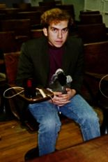

ACF stands for Academic Competition Federation, a loosely centralized non-incorporated, non-profit organization dedicated to providing low-cost, high-quality academic quiz tournaments.
The Federation was started in the summer of 1997 upon the dissolution of a previous organization with the same initials, the Academic Competition Foundation, which sponsored a National championship tournament and a nationwide set of Regional tournaments each year from 1991-1997. The new ACF has adopted these orphaned tournaments and will be running them this year under the editorship of John Edwards, Rick Grimes, and Dave Hamilton (see Announcements on this web site).
ACF is headed by John Sheahan, Andrew Yaphe, and David Hamilton.
|  | Andrew was the president of the University of Virginia's quiz team, the 1997 and 1998 ACF champions. In addition to heading ACF, he was the editor of the 1998 Wahoo War of the Minds. He also played on the Virginia team that finished 3rd at 1996 ACF Nationals, and has won numerous invitational tournaments. He is now at the University of Chicago and may be contacted at adyaphe@midway.uchicago.edu. |
John was the editor of the 1998 National Tournament. He played on the 1993 and 1994 University of Chicago teams that won the ACF National Championship, and was on the teams that took 5th place in 1995 and 2nd place in 1997. John also won the 1997 NAQT championship. You can reach him at jsheahan@midway.uchicago.edu.
|
|
Matt Colvin was the editor of the 1998 Regionals. He played for the University of Maryland teams that took 2nd and 3rd at ACF Nationals in 1996 and 1997. He is currently the president of the Cornell team. Email him at mac47@cornell.edu. |
David Hamilton is the creator and maintainer of the ACF web page, and is also the editor of 1999 ACF Regionals. He also played on the 1996-7 Maryland teams that finished 2nd and 3rd at ACF Nationals. He was the president of the Maryland team and the chief editor of the 1997 and 1998 Terrapin Invitational Tournaments.